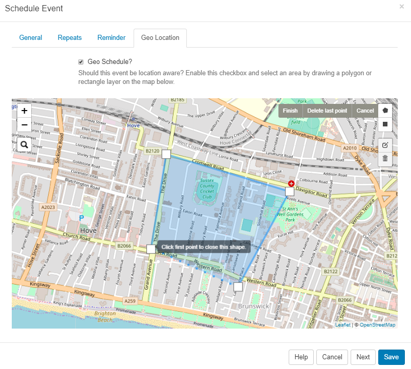
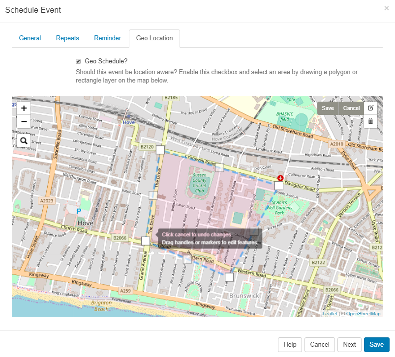

Geo Scheduling
Scheduled Events can be configured to be location aware with locations displayed on a map view.
Define Location
-
From the Schedule Event form, click on the Geo Location tab.
-
Tick in the Geo Schedule box to enable and define the location.
On opening, the map will default to what is entered for DEFAULT_LAT and DEFAULT_LONG in CMS Settings, under the Displays tab.
- Use the buttons in the top left of the map to Zoom in and out.
- Click on the search icon to enter details for a particular area.

- Define an area by drawing a Polygon or Rectangle layer on the map.

Edit
- Once an area has been defined, click on the edit icon to to drag the markers to make adjustments to the existing Layer.
- Click on the grey Save button located here to ensure that edits are saved.

Delete
- To remove the area, use the bin icon and click into the area to delete
- Click the grey Save button to save the removal of the layer.
Edit this schedule by clicking the icon in the Calendar or by using the row menu in the Grid view!